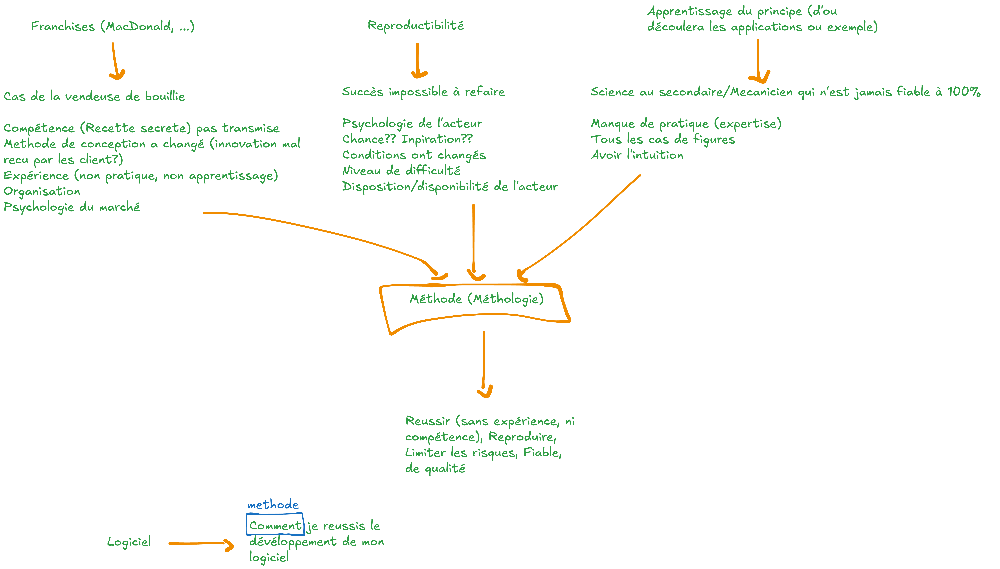

Chapitre 0 : Introduction à la méthodologie
Avant de parler de développement de logiciel, prenons du recul : qu’est-ce qu’une méthode (ou méthodologie), et pourquoi est-elle si importante — dans la vie de tous les jours comme en ingénierie ?
Une méthode est un processus, étape par étape, qui décrit comment atteindre un objectif de façon fiable et reproductible.
Objectifs
À la fin de ce chapitre, vous devez pouvoir :
Définir ce qu’est une méthode / une méthodologie
Illustrer, par des exemples du quotidien, pourquoi une méthode est nécessaire
Comprendre que le développement d’un logiciel est complexe — d’où le caractère critique d’une méthodologie
Exercice introductif
Pensez à une réussite que vous n’avez jamais su reproduire. Pourquoi, selon vous ?
Connaissez-vous une « recette » (au sens large) qui marche à tous les coups ? Qu’est-ce qui la rend si fiable ?
Pourquoi deux personnes, partant du même objectif, arrivent-elles parfois à des résultats très différents ?
Pourquoi une méthodologie ?
{kind=link}

Trois situations du quotidien mènent toutes à la même conclusion : il faut une méthode.
Trois exemples convergent vers la même idée.
1. Les franchises (McDonald’s, …)
Les grandes franchises (McDonald’s, Quick, Burger King, …) reposent sur une méthode reproduite partout — « la recette magique ». D’où un gain énorme.
Le contre-exemple : le cas de la vendeuse de bouillie. Tant que la compétence (la « recette secrète ») n’est pas transmise comme une méthode, tout s’écroule dès que :
la compétence n’est pas transmissible ;
la méthode de conception change (une innovation mal reçue par les clients) ;
l’expérience reste tacite (non mise en pratique, non apprise) ;
l’organisation et la psychologie du marché ne sont pas prises en compte.
2. La reproductibilité
Réussir une fois ne sert à rien si le succès est impossible à refaire. Sans méthode, le résultat dépend de facteurs incontrôlés :
la psychologie et la disponibilité de l’acteur ;
la chance ou l’inspiration ;
des conditions qui ont changé ;
le niveau de difficulté rencontré.
Une méthode rend le succès reproductible, indépendamment de ces aléas.
3. L’apprentissage du principe
Une bonne méthode capture un principe général, d’où découlent ensuite les applications et les exemples. À l’inverse, sans principe :
on manque de pratique et d’expertise ;
on ne couvre pas tous les cas de figure ;
on dépend de son seul « flair » / intuition.
C’est le maçon (ou l’élève du secondaire) « qui n’est jamais fiable à 100 % » : faute d’avoir appris le principe, il ne peut pas garantir le résultat.
Ce qu’apporte une méthode
Dans les trois cas, la méthode (méthodologie) permet de :
réussir même sans expérience ni compétence préalable ;
reproduire le résultat ;
limiter les risques ;
obtenir quelque chose de fiable et de qualité.
Et le logiciel dans tout ça ?
Développer un logiciel est une activité complexe : beaucoup d’étapes, de cas à prévoir, d’acteurs à coordonner, et des erreurs qui peuvent coûter très cher (l’explosion d’Ariane 5 en 1996, due à une erreur logicielle, en est un exemple célèbre).
À retenir
Plus une activité est complexe, plus disposer d’une méthode pour la mener devient critique. C’est précisément le cas du développement logiciel — et c’est tout l’objet de ce cours.
Logiciel + méthode → « Comment je réussis le développement de mon logiciel. »
La suite du cours répond à ce « comment » : les fondamentaux (qu’est-ce qu’un logiciel, son cycle de vie, sa documentation), puis les méthodes de développement proprement dites.
Pour aller plus loin
Pour approfondir la notion de méthodologie, vous pouvez consulter cette playlist vidéo sur la méthodologie.